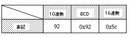

Return to previous page | Return to menu | Go to next page
Uint32
Arithmetic functions
Convert hexadecimal code to BCD code
Uint32 slHex2Dec(val)
Uint32 val ;
val Hexadecimal code to be converted
Convert hexadecimal code to BCD code.
The function returns the converted BCD code.
BCD code: Notation for representing 0 to 9 in 4 bits
(Example: Decimal 128 is 0x128 in BCD notation)

Note) Examples of numerical notation using each numerical notation are shown below.
Reference: Chapter 11 Arithmetic Functions
slHex2Dec